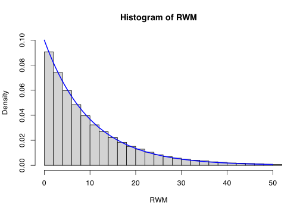
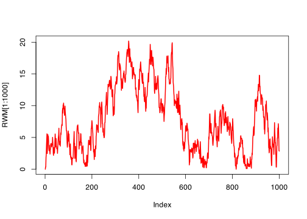
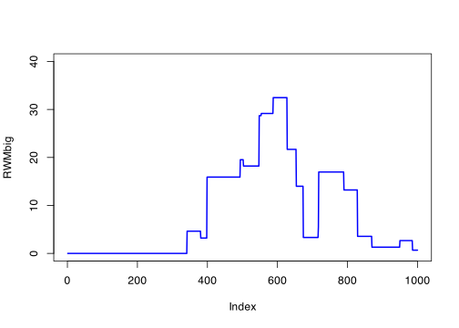
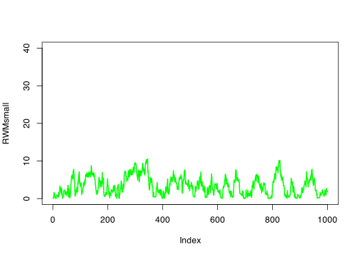
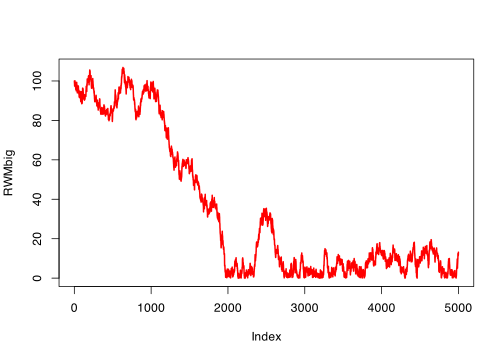

metroexp <- function(n, rate, sigma, initial) {
MC <- rep(0, n)
accept <- function(x, y) exp(-rate * (y - x))
MC[1] <- initial
for (i in 1:(n - 1)) {
prop <- MC[i] + rnorm(1, 0, sigma)
if (prop < 0) MC[i + 1] <- MC[i]
else if (runif(1) <= accept(MC[i], prop)) MC[i + 1] <- prop
else MC[i + 1] <- MC[i]
}
return(MC)
}21 Metropolis–Hastings in continuous space
21.1 The Metropolis–Hastings algorithm again
Last time, we looked at Markov chains \((X_i)\) in continuous space, as defined by a transition density \(p(x, y)\). We saw (under certain technical conditions we didn’t get into) that we have convergence to a unique stationary probability density \(\pi\). We further saw that we have an ergodic theorem \[ \frac{1}{n} \sum_{i=1}^n \phi(X_i) \to \operatorname{\mathbb E}\phi(X) , \] where \(X\) has PDF \(\pi\).
As before, this opens up to us the possibility of MCMC: find a Markov chain with stationary distribution equal to the PDF you want to sample from, then use the output of the Markov chain as the samples in a Monte Carlo estimator. And, yet again, the Metropolis–Hastings algorithm gives us a way to find such a Markov chain. The continuous Metropolis–Hastings algorithm is essentially the same as the discrete time one, but with densities instead of probabilities.
We want to define a Markov chain on a continuous state space \(\mathcal S\), which contains the range of the probability density function \(\pi\) we want to sample from.
We have an initial state \(X_1 = x_1\) and we choose a transition density \(r = r(x,y)\) representing the proposal moves.
From a current state \(X_i = x\) we propose moving to a new state \(y\), where \(y\) is chosen according to the probability density \(r(x, y)\).
With probability \[\alpha(x,y) = \min \left\{ \frac{\pi(y)\,r(y,x)}{\pi(x)\,r(x,y)} , \, 1\right\} , \] we accept the proposal, and set \(X_i = y\); otherwise we stay put, and set \(X_{i+1} = x\).
We repeat steps 1. and 2. \(n\) times to get \(n\) samples.
(Note that the acceptance probability \(\alpha(x, y)\) really is a probability, not a density.)
This can be proved to have \(\pi\) as a stationary density by checking the detailed balance equations. The proof is identical to the discrete case, so we won’t write it out again.
21.2 Random walk Metropolis again
As with the discrete case, when the transition density is symmetric, in that \(r(y, x) = r(x, y)\) for all \(x, y \in \mathcal S\), then the acceptance probability simplifies to \[\alpha(x,y) = \min \left\{ \frac{\pi(y)}{\pi(x)} , \, 1\right\} , \] and we call it just the Metropolis algorithm.
When the proposal density is that of a Gaussian random walk with drift \(\mu = 0\), we call this Random walk Metropolis.
Example 21.1 Suppose we wish to sample from an exponential distribution \(X \sim \operatorname{Exp}(\lambda)\), which has PDF \(\pi(x) = \lambda \mathrm{e}^{-\lambda x}\) for \(x \geq 0\).
We can sample from this using the random walk Metropolis algorithm. From \(X_i = x\), we propose a move to \(y = x + \operatorname{N}(0, \sigma^2) = \operatorname{N}(x, \sigma^2)\). If \(y \geq 0\), we accept the proposed move with probability \[\alpha(x,y) = \min \left\{ \frac{\pi(y)}{\pi(x)} , \, 1\right\} = \min \left\{ \frac{\lambda\mathrm{e}^{-\lambda y}}{\lambda\mathrm{e}^{-\lambda x}} , \, 1\right\} = \min \big\{ \mathrm{e}^{\lambda(x - y)},\, 1\big\} .\] So if \(0 \leq y \leq x\), then we always accept the move with probability 1, while if \(y > x\) then we accept with probability \(\alpha(x, y) = \mathrm{e}^{-\lambda(y-x)}\). If \(y < 0\), then \(\pi(y) = 0\), so \(\alpha(x, y) = 0\), and we always reject.
The following R function carries this out.
We used a cunning trick to slightly simplify the above code. If \(\pi(y) / \pi(x) > 1\), then the acceptance probability is 1, from the “min” in the definition of \(\alpha(x, y)\). But the implementation to accept if \(U \leq \pi(y) / \pi(x)\) still works. This makes the else if line in the above code a bit simpler, as we didn’t have to deal with this case separately.
Let’s try it out for \(\lambda = 0.1\) and \(\sigma = 15\).
RWM <- metroexp(1e6, 0.1, 15, 0)
hist(RWM, probability = TRUE, xlim = c(0, 50), ylim = c(0, 0.1), breaks = 100)
curve(dexp(x, 0.1), add = TRUE, lwd = 2, col = "blue")
This looks like an excellent match to the \(\operatorname{Exp}(0.1)\) distribution.
In the random walk Metropolis algorithm, we had to pick the value for the parameter \(\sigma\). In this algorithm, \(\sigma\) can be interpreted as a “typical step size”, in that the standard deviation of the step proposal \(y - x\) is \(\sigma\). The ergodic theorem will still hold for any value of \(\sigma\) in the limit as \(n \to \infty\), but the practical performance at finite \(n\) may be different for different values.
Let’s have a look at how the Markov chain moved with our step size of \(\sigma = 15\)
plot(RWM[1:1000], lwd = 2, ylim = c(0, 40), col = "red", type = "l") 
It’s clear this isn’t an independent sample, since this is not purely “exponentially distributed noise”. But it seems to exploring the range of different values an \(\operatorname{Exp}(0.1)\) distribution is likely to take very rapidly.
What if we had chosen a much larger step size, like \(\sigma = 400\), or a much smaller one, like \(\sigma = 1\)?
RWMbig <- metroexp(1000, 0.1, 400, 0)
plot(RWMbig, lwd = 2, ylim = c(0, 40), col = "blue", type = "l")
RWMsmall <- metroexp(1000, 0.1, 1, 0)
plot(RWMsmall, lwd = 2, ylim = c(0, 40), col = "green", type = "l")
We can see that when \(\sigma = 400\) (blue), there are lots of “flat parts” of the graph. This is where the Markov chain did not move, because it was rejecting lots of proposed moves. This would be because large steps would often produce either negative proposals, which are always rejected, or very large proposals, where the acceptance probability is very small. This Markov chain is rarely moving at all, so is not exploring the state space very well.
We can also see that when \(\sigma = 1\) (green), the Markov chain was often accepting moves, but only making small steps. Compared to the \(\sigma = 15\) case, this graph is much less “busy”, and looks more like a gentle wander through the state space rather than a rapid exploration. So although this Markov chain is moving through the state space, it is crawling through space quite slowly.
We saw here a general pattern when choosing the step size in a Gaussian random walk Metropolis algorithm:
If the step size is too large, then too many proposals are rejected. This means you often stay in the same state for a long time, and you only rarely move to explore a new state.
If the step size is too small, then proposals are very close to the current state. This means you often stay in the same approximate area for a long time, and you crawl through the state space very slowly.
You want to try and pick the “Goldilocks” step size – not too small, and not too big! There is no perfect recipe you can follow to pick the ideal step size – MCMC is an art as well as a science. If you are able to, it can be helpful to think about what typical values you hope to be sampling. In our example, ranges of between 0 and 30 or so are typical for \(\operatorname{Exp}(0.1)\), so you want a step size that will explore such a range well without too regularly stepping outside of it. Our choice of \(\sigma = 15\), being half of that \([0, 30]\) range seemed to do quite well. It’s also worth doing short “pilot” runs, where you try different values of \(\sigma\) and examine what seems to work best.
21.3 Burn-in period
Recall that the goal of MCMC is to sample from the stationary distribution \(\pi\). It’s therefore a good idea, if it’s possible, to start from an initial value that’s “typical” of \(\pi\); that is, has a large value of \(\pi\) and is near other states with large values of \(\pi\). That was definitely true for \(X_1 = 0\) in our previous example.
But what happens if we don’t pick such an initial state – either because we don’t know what these typical states look like, or by mistake.
Example 21.2 We continue with the previous example, with step size \(\sigma = 2\). What if we had started at \(X_1 = 200\) instead – what then would the Markov chain look like.
set.seed(4)
RWMbig <- metroexp(2000, 0.1, 2, 200)
plot(RWMbig, lwd = 2, col = "red", type = "l")
You can see that, at the start, it takes us a while to move away from the “bad” initial state \(X_1 = 200\) and to get to the “typical values” of \([0, 35]\) or so. In this example, it took around 1000 steps.
The ergodic theorem tells us this, eventually, for large enough \(n\), these early unrepresentative samples will be drowned out of our large-\(n\) collection. But for modest finite values of \(n\), these are likely to corrupt our Monte Carlo estimation procedure.
For that reason, it can often be useful to use a burn-in period. A burn-in period is when you run the Markov chain for a while without using the samples in estimation, and only start using samples once you have “reached the stationary distribution” – the phrase “reached equilibrium” is also sometimes used. Again, how long a burn-in period should be is art more than science – thinking about your specific problem and conducting experiments can help you decide if a burn-in period is necessary and how long it should be. If the state space and stationary distribution are easy to understand – say, \(\mathcal S\) is one-dimensional and \(\pi\) has a single mode – you can even run the MCMC algorithm first, then afterwards decide which unrepresentative early samples to throw away.